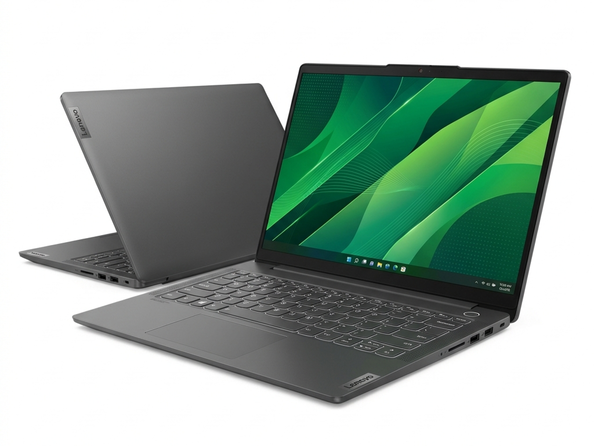

Lenovo IdeaPad Slim 5
Laptop Lenovo IdeaPad Slim 5 cu procesor Intel Core i5-13420H, 16 GB RAM, SSD 512 GB și ecran 16" WUXGA, subțire și cu autonomie mare.
3.199,99 lei
✔ În stoc
Descriere
Lenovo IdeaPad Slim 5 combină un ecran mare de 16 inch cu o carcasă subțire din aluminiu și o baterie generoasă, ideal pentru studenții care lucrează toată ziua fără priză.
Performanță
Procesorul Intel Core i5-13420H din seria H are 8 nuclee și o frecvență de până la 4,6 GHz, mai puternic la sarcini susținute decât procesoarele din seria U.
Ecran și conectivitate
Ecranul WUXGA de 16" are format 16:10 și 300 niți. Laptopul oferă Wi-Fi 6, două porturi USB-C, HDMI și cititor de carduri microSD.
Întrebări frecvente
Ce autonomie are Lenovo IdeaPad Slim 5?
Bateria de 57 Wh oferă până la 10 ore de utilizare obișnuită, cea mai mare autonomie dintre cele trei laptopuri prezentate.
Ce avantaj are ecranul de 16 inch WUXGA?
Rezoluția WUXGA (1920x1200) și formatul 16:10 afișează mai mult conținut pe verticală, util pentru documente, cod și tabele.
Cât cântărește Lenovo IdeaPad Slim 5?
Laptopul cântărește aproximativ 1,89 kg și are o grosime de 16,9 mm, deci poate fi transportat ușor zilnic.